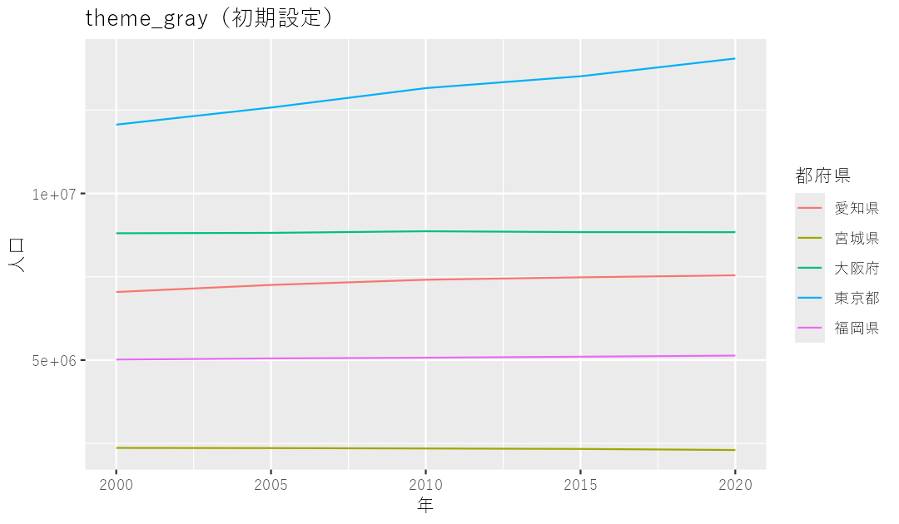
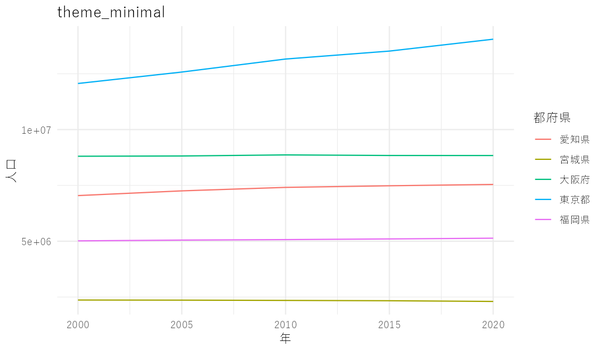

第2部 データを見る
グラフを仕上げて外に出す
日本語が四角に化ける問題、画像として保存する方法、デザイナーに渡すcsvの作り方、ついでにマウスで触れるグラフも。
日本語が「□□□」になるとき
グラフに日本語のタイトルを入れたら、文字が全部豆腐みたいな四角になった。あるいは警告がずらずら出てきた。こういうことが時々あります。
原因は、ggplotが使おうとしている標準のフォントに日本語が入っていないことです。使うフォントを指定してやれば直ります。
theme_set(theme_gray(base_family = "HiraKakuProN-W3")) # Mac
theme_set(theme_gray(base_family = "Yu Gothic")) # Windowstheme_set() は「これからつくるグラフ全部にこの設定を使ってね」という命令です。R Markdownのいちばん上、library(tidyverse) の次の行あたりに書いておくのがおすすめです。
テーマで見た目を変える
ggplotの初期設定は背景が灰色です。こんな感じ。

テーマを変えると、雰囲気がかなり変わります。
five_pref %>%
ggplot() +
geom_line(aes(x = year, y = population, color = prefecture)) +
theme_minimal()
| テーマ | 見た目 |
|---|---|
theme_gray() | 初期設定。灰色の背景に白い格子 |
theme_minimal() | 白地に薄い格子。すっきり |
theme_classic() | 白地に軸の線だけ。論文っぽい |
theme_bw() | 白地に黒枠 |
細かい調整もできます。よく使うのは凡例の位置と、文字の大きさくらいでしょうか。
theme(legend.position = "bottom", # 凡例を下に
plot.title = element_text(size = 16)) # タイトルを大きくが、まあこういうのは凝りだすとキリがありません。しかも凝ったところで社内のデザイナーが作り直すことになるので、ほどほどに。
グラフを画像として保存する
同僚にチャットで送りたい、企画書に貼りたい。そういうときは ggsave() を使います。
ggsave("output/kodomo.png", width = 8, height = 5, dpi = 200)直前に描いたグラフが保存されます。オブジェクトに入れてから保存することもできます。
g <- five_pref %>%
ggplot() +
geom_line(aes(x = year, y = population, color = prefecture))
ggsave("output/jinko.png", plot = g, width = 8, height = 5, dpi = 200)width と height はインチ、dpi は解像度です。拡張子を .pdf や .svg にすると、拡大しても劣化しない形式で保存できます。デザイナーに渡すならこちらのほうが喜ばれます。
あるいは、RStudioの右下のパネルにあるExportボタンを押せば、コードを書かなくても画像を保存できます。お好きなやり方でどうぞ。
デザイナーに渡すデータを書き出す
いい感じのグラフができたとはいえ、さすがにこれをそのまま記事に使って読者様にお見せするのは、ちょっとキツイ。社内にいるプロのデザイナーに頼んで、もっとかっこいいグラフにしたいですよね。あるいはFlourishとかを使って、ウェブで使えるインタラクティブなグラフにしてもいいでしょう。いずれにしても、データを何らかの形で出力して保存する必要があります。そのときにはこんなコードを書きます。
all_municipality_change %>%
write_excel_csv("output/デザイナー用.csv")write_excel_csv というのが、そのための関数です。同じようなことができる関数はいくつかあります。たとえば write_csv なんていうものもありますが、これで出力したファイルをエクセルでそのまま開くと文字化けしてしまいます。write_excel_csv ならエクセルでも文字化けしませんので、私はこちらをよく使っています。
渡す前に、必要な列だけに絞っておくのも親切です。たとえばこんな感じ。
all_municipality_change %>%
select(
prefecture,
municipality,
population_2020,
change_under15
) %>%
write_excel_csv("output/デザイナー用.csv")マウスで触れるグラフにする
もう一つ、自分がデータを探るときに便利な技を紹介します。plotlyというパッケージを使うと、ggplotで描いたグラフをそのままマウスで触れるものに変えてくれます。
install.packages("plotly")
library(plotly)ggplotly() という関数の丸括弧のなかに、インタラクティブ化したいグラフを入れるだけです。
ggplotly(
all_municipality_change %>%
mutate(area = if_else(prefecture == "東京都", "東京都の自治体", "その他")) %>%
ggplot() +
geom_point(
aes(x = population_2020, y = change_under15, color = area),
alpha = 0.3
) +
scale_x_log10()
)点にマウスを乗せると、それがどの都道府県のどの年のデータなのかが表示されます。さきほど「47色は多すぎる」と書きましたが、こうやって一つずつ確かめられるなら、色が多くても探索の役には立ちます。
これは記事用ではなく、自分が確かめるための道具だと考えるのがいいと思います。「この外れ値、どこだ？」を一瞬で確かめられるので、私は分析中にかなり使います。htmlとして出力することもできるので、同僚と共有するのにも使えます。
これで第2部は終わりです。データを読み込んで、加工して、グラフで眺めて、外に出すところまでできるようになりました。
ただ、ここまでのすべては「データがすでに手元にある」ことを前提にしていました。次の第3部では、そのデータを自分で集めてくる方法を扱います。